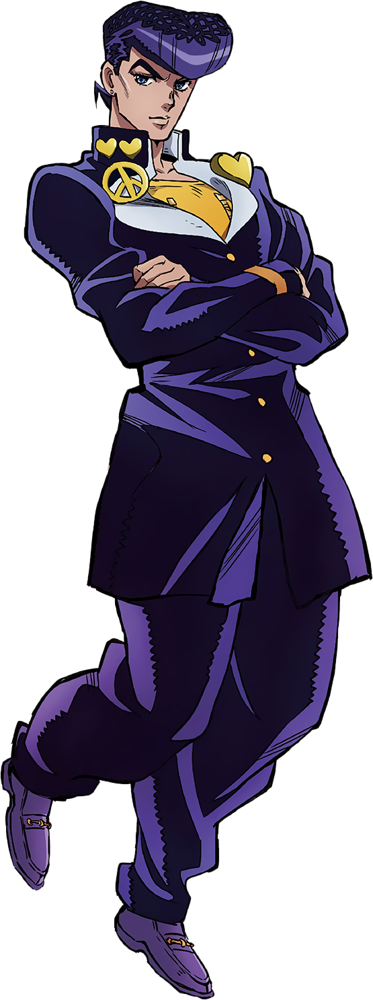

JOSUKE HIGASHIKATA
Josuke Higashikata é o protagonista de JoJo’s Bizarre Adventure: Diamond is Unbreakable (Parte
4). Filho ilegítimo de Joseph Joestar, ele é, tecnicamente, tio de Jotaro Kujo, apesar de ser
bem mais novo. Josuke vive na pacata cidade de Morioh e, no início, leva uma vida normal de
estudante do ensino médio — até eventos bizarros envolvendo Stands começarem a agitar a região.
Gentil, carismático e com um forte senso de justiça, Josuke se importa profundamente com seus
amigos e com sua cidade natal. Mas não se engane: nunca zombe do cabelo dele, ou ele perde
completamente o controle e parte pra cima com tudo. Esse é um gatilho que mostra seu lado
impulsivo e explosivo.
Seu Stand, Crazy Diamond, é poderoso, rápido e tem uma habilidade única: restaurar ou
“consertar” coisas. Ele pode curar ferimentos, remontar objetos quebrados e até usar isso de
forma criativa em combate. No entanto, ele não consegue curar a si mesmo, o que adiciona uma
camada de risco nas batalhas.
Ao longo da Parte 4, Josuke se junta a Koichi, Okuyasu e outros aliados para investigar e
enfrentar os usuários de Stand que surgem em Morioh — incluindo o perigoso serial killer
Yoshikage Kira. Mesmo mais descontraída que outras partes, a história traz desafios intensos, e
Josuke mostra ser um líder nato, equilibrando estratégia, força e coração.